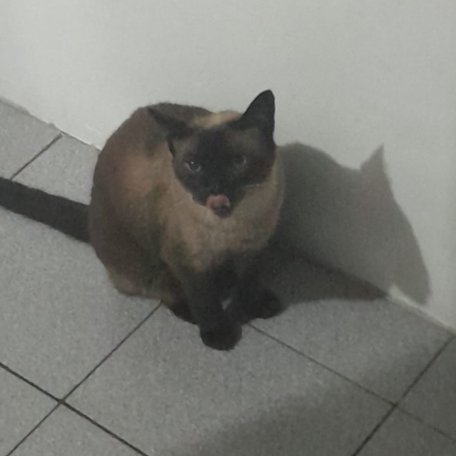
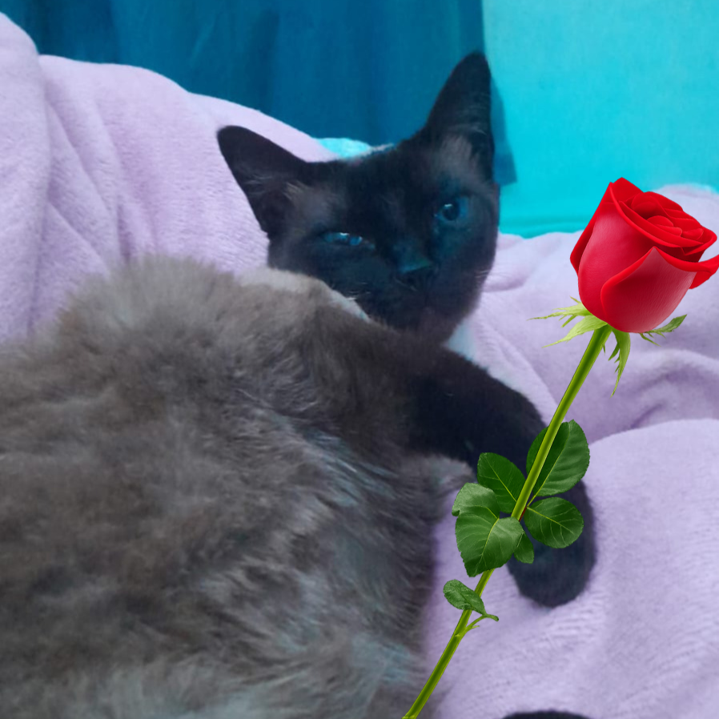
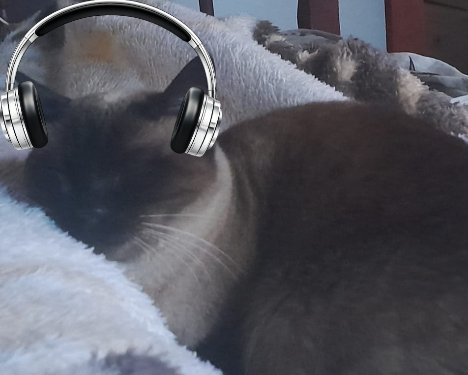
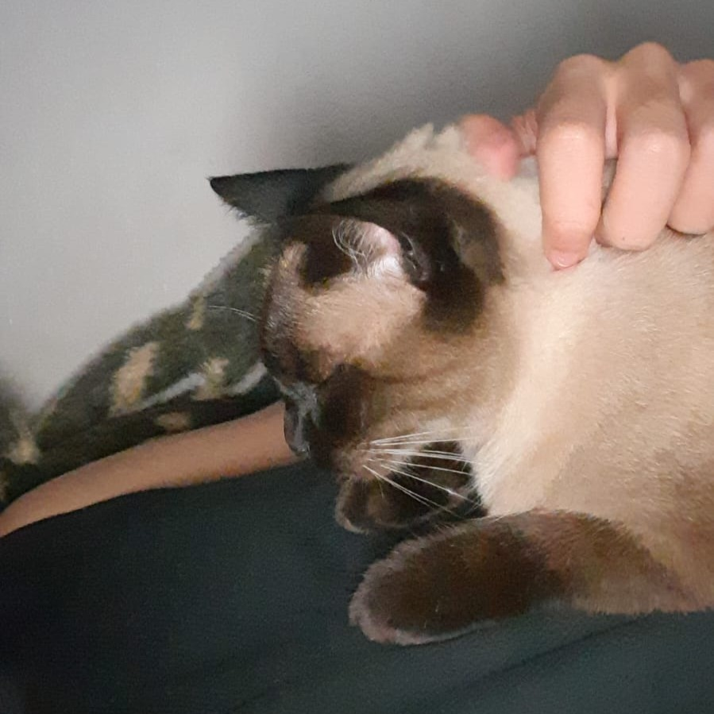

Olá, pessoal! Eu sou a Baly, uma gata que, de cima do meu arranhador, observa muito bem a dinâmica dos humanos, e hoje venho aqui te dar conselhos e ajudas preciosas para o Dia dos Namorados. Neste site, você encontrará tudo o que quiser para fortalecer o seu relacionamento e mimar o seu parceiro, desde presentes criativos feitos à mão até as mais sinceras palavras de afirmação. O meu primeiro grande conselho para esta data é que você não espere o dia decolar sozinho; o amor, assim como um bom novelo de lã, precisa de atenção e carinho para não embaraçar. Tire um tempo para observar os pequenos detalhes de quem está ao seu lado, perceba o que faz os olhos da pessoa brilharem e use essa percepção para criar um momento verdadeiramente único, pois a autenticidade de um gesto simples muitas vezes supera o luxo de qualquer banquete sofisticado.
Para que tudo saia perfeito, recomendo focar na qualidade do tempo que vocês vão passar juntos, deixando de lado as distrações do celular e as preocupações do trabalho para se dedicarem inteiramente um ao outro. Se você optar por presentes manuais, coloque sua alma no processo, e se escolher as palavras de afirmação, fale com o coração aberto, expressando gratidão por cada momento compartilhado e demonstrando o quanto a presença daquela pessoa torna a sua vida mais feliz. Lembre-se de que o segredo de uma união duradoura está na constância do afeto e no respeito mútuo diário, então use o Dia dos Namorados como um lindo trampolim para renovar os seus votos de cumplicidade. Siga os meus conselhos felinos, prepare o ambiente com muito aconchego e permita-se viver uma celebração repleta de abraços quentes, sussurros doces e uma conexão profunda que vai aquecer o peito de vocês por muito tempo.

Clique Aqui!
Neste site você poderia encontrar dezenas de miau-dicas para poder auxiliar no seu relacionamento com seu miau-parceiro. As dicas irão de presentes bonitinhos até palavras de afirmação da forma que você preferir. Aproveite! 😽
Escolha o que deseja:
Ideias de presentes românticos para seu parceiro

Clique Aqui!
Músicas para se dedicar ao seu parceiro

Clique Aqui!
Palavras bonitas para se dizer ao seu parceiro
Clique Aqui!
Você precisa de dicas de presentes para dar para seu(a) gatinho(a). Aqui é o lugar perfeito!
Meus presentes vão desde:
Mordidas de amor
Até ronronar no peito de quem ama.

Abaixo darei dicas de presentinhos para dar ao seu parceiro. 😼